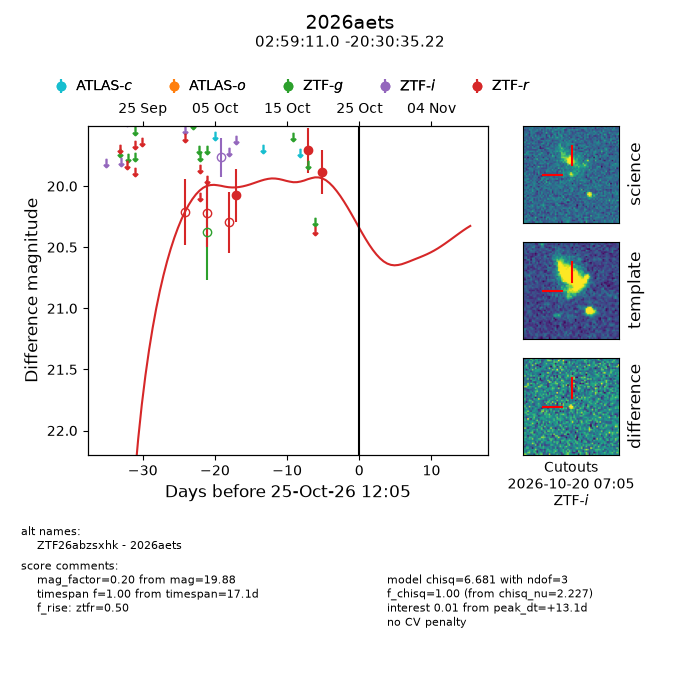
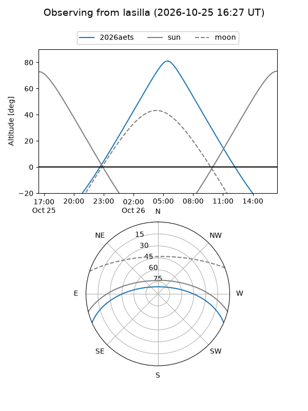
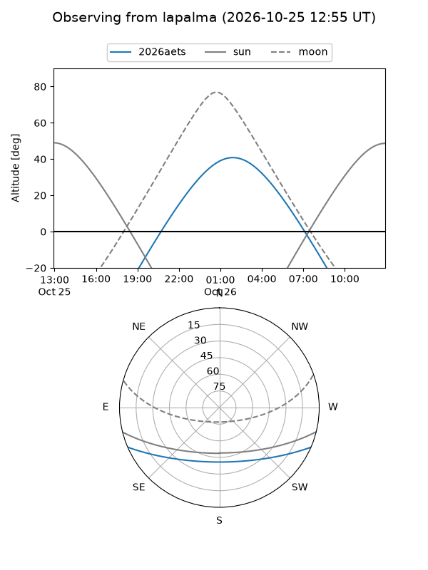
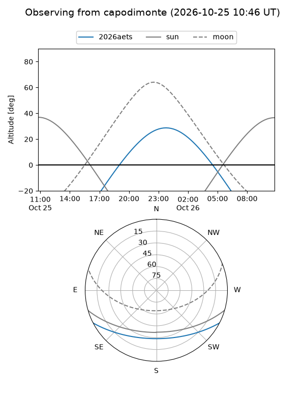
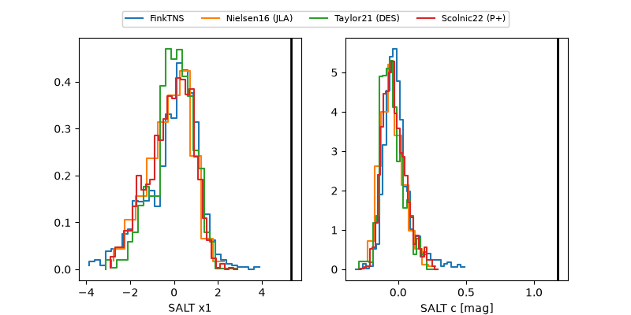

2026aets
Target 2026aets at 2026-10-25 12:06
Aliases and brokers:
FINK-ZTF: ztf.fink-portal.org/ZTF26abzsxhk
Lasair-ZTF: lasair-ztf.lsst.ac.uk/objects/ZTF26abzsxhk
ALeRCE-ZTF: alerce.online/object/ZTF26abzsxhk
YSE-PZ: ziggy.ucolick.org/yse/transient_detail/2026aets
TNS name: wis-tns.org/object/2026aets
Direct TNS query: direct search
alt names
ZTF26abzsxhk (ztf,fink_ztf)
2026aets (tns,yse)
Coordinates:
equatorial (ra, dec) = 44.7957,-20.50978
equatorial (HMS+DMS) = 02:59:10.97,-20:30:35.22
galactic (l, b) = (207.0990,-60.13071)
Flags:
peak dt: +13.1
Photometry:
last ztfr=19.88
3 ztfr detections
Lightcurve

Visibility



Additional plots
